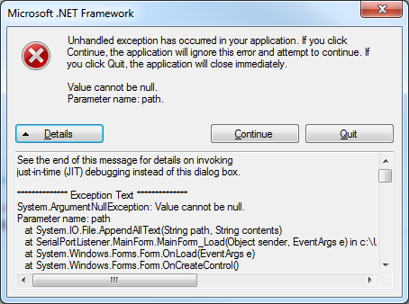

StackOverflow is lying to you - Converting a stack trace to a string - 8th June 2016
So last night while I was writing Anthrazit, I stumbled upon an issue, that is converting a stack trace to a string, to log to a file.
Naturally, I went to StackOverflow and searched for the issue.
I found this which suggests using a PrintWriter and a StringWriter to do it. It was a bit strange to me that
it needed that much imports from java.io.* to complete something trivial as converting a stack trace to a string.
It looked something like this:
StringWriter sw = new StringWriter();
PrintWriter pw = new PrintWriter(sw);
e.printStackTrace(pw);
sw.toString(); // stack trace as a string
I asked my friend Mishke to try and make something more efficient, and he failed miserably (didn't even try). So, determined to fix this,
I started digging through the Throwable javadoc and found an interesting method called getStackTrace() which returns an array of
StackTraceElements, and I tried calling toString() on each element individually, and guess what? toString() returns the location at
which every StackTraceElement occured. Now just loop though the elements ...
...
} catch (FileNotFoundException e) {
String trace = e.toString() + "\n";
for (StackTraceElement el : e.getStackTrace()) {
trace += "\t at " + e1.toString() + "\n";
}
}
So now the trace variable should hold my stack trace righ? Exactly. Here is what I got after printing the trace variable.
iava.io.FileNotFoundException: / (Is a directory)
at java.io.FileOutputStream.open0(Native Method)
at java.io.FileOutputStream.open(FileOutputStream.java:270)
at java.io.FileOutputStream.(FileOutputStream.java:213)
at java.io.FileOutputStream.(FileOutputStream.java:101)
at Test.main(Test.java:9)
And here is the original, Java generated stack trace in my console, printed by printStackTrace():
java.io.FileNotFoundException: / (Is a directory)
at java.io.FileOutputStream.open0(Native Method)
at java.io.FileOutputStream.open(FileOutputStream.java:270)
at java.io.FileOutputStream.(FileOutputStream.java:213)
at java.io.FileOutputStream.(FileOutputStream.java:101)
at Test.main(Test.java:9)
It's almost identical, the minor difference beign indentation of stack trace elements. Later I implemented that into Anthrazit and
a log file with an exception thrown looked like this:
[1465418029171] {INFO} anthrazit: Successfully started at 1465418029170
[1465418029172] {DEBUG} anthrazit: fileName: anthrazit-1465418029170.log, logPath: /home/gala, exitOnFatal: true, debug: true
[1465418029172[ {EXCEPTION} java.io.FileNotFoundException: / (Is a directory)
at java.io.FileOutputStream.open0(Native Method)
at java.io.FileOutputStream.open(FileOutputStream.java:270)
at java.io.FileOutputStream.(FileOutputStream.java:213)
at java.io.FileOutputStream.(FileOutputStream.java:101)
at io.github.smclt30p.anthrazit.Main.main(Main.java:30)
A perfect stack trace inside a .log file.
The point of this post was, don't just copy and paste random code off of StackOverflow and paste it somewhere if it works. Always
seek a more efficient solution, a lighter solution. Read documentaion of the Standard Libraries, research more. There is always a better
solution for a problem that you have.
I feel that this is the problem why we have one of the things I hate the most: bad software. There is a distinct difference between
a drag-and-drop program written in C# and Visual Studio, most of it copied and pasted from StackOverflow, and a program that has been
written with care and passion, and, a brain. If you don't understand me, have a look at this. It's in C# though, a thing I know nothing about.

Familiar sight, isn't it?
[ Back to index ]